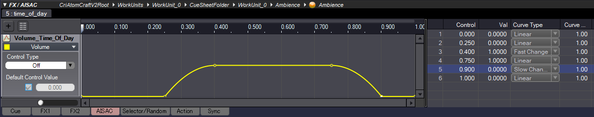
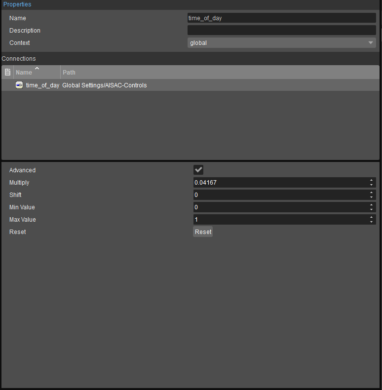

Обзор
Ниже объясняется, как создать дневной и ночной цикл в CRYENGINE с помощью ADX2.
Настройка времени суток в ADX2 и CRYENGINE
CRYENGINE автоматически отправляет значение времени суток (в формате 24 часа) в аудиосистему. Однако для того, чтобы ADX2 получил значение времени суток, необходимо создать соответствующий параметр в редакторе элементов управления звуком и подключить его к элементу управления ADX2 AISAC. Назовите этот параметр аудиосистемы time_of_day.
Настройка времени суток в CRI Atom Craft
Создайте новый элемент управления AISAC под названием time_of_day в дереве проектов Atom Craft.
Назначьте этот элемент управления AISAC на AISAC, щелкнув правой кнопкой мыши по Cue или треку, который может, например, содержать дневной слой атмосферы;.
- Выберите Новый объект → Создать AISAC... опция из контекстного меню.
- В окне «Добавить Aisac» установите Элемент управления AISAC (ID: Имя) чтобы time_of_day и AISAC Тип графика чтобы Объем.
Автоматизация громкости для этого time_of_day AISAC может напоминать график на рисунке ниже.

График AISAC для time_of_day
Тип кривой можно изменить, щелкнув правой кнопкой мыши точку в окне AISAC и выбрав Тип кривой. Вы также можете прослушать полученное затухание, перемещая локатор в окне AISAC от 0 до 1.
Соединение времени суток в ADX2 и CRYENGINE
С time_of_day Элемент управления AISAC создан и назначен на сигнал или дорожку в ADX2. Теперь вы можете открыть ACE в CRYENGINE и подключить элемент управления ADX2 AISAC к time_of_day Параметр аудиосистемы, созданный в начале этой страницы.
Поскольку AISAC Элементы управления иметь диапазон только от 0 до 1, максимальное значение time_of_day Параметр (т. е. 24) в ACE необходимо нормализовать. Чтобы сделать это после тот time_of_day AISAC Управление подключено к time_of_day Параметр в ACE, активируйте Расширенный установите флажок на панели свойств ACE и установите значение Макс. значение поле до 24.

Умножить